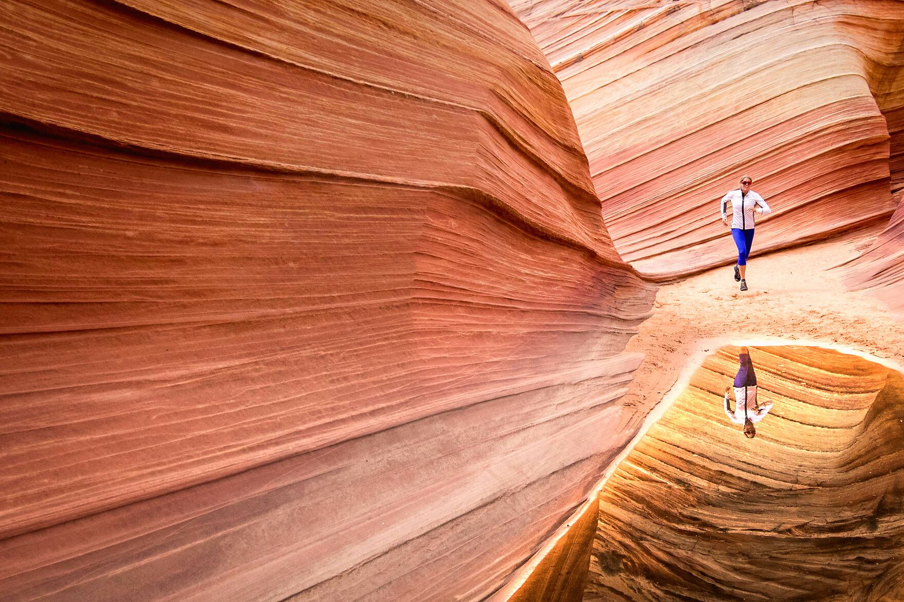

Plenty of people hike The Wave on their own. Some get lost on the bare rock or overheat on the way back.
Answer 13 questions, about 3 minutes, to see whether a guide would make your day easier and what to plan for either way.
Wave Ready is made by Kanab locals who hike The Wave often and by the guides of Dreamland Safari Tours, a Kanab tour company. Over the years several of us have volunteered on the BLM's Wave safety patrol and with Kane County search and rescue, and some of Dreamland's guides still do both. Dreamland pays for and hosts this site.
When a guide would help, the result links to Dreamland's tours. Any guide the BLM authorizes can take you; the BLM's Arizona Strip office, 435-688-3200, has the list.
Yes. A guide isn't required, and many people hike The Wave on their own every year. Everyone needs a permit. The hike is 6.4 miles round trip, and the BLM rates it strenuous. For most of it there's no marked trail: you find the way by matching the BLM's landmark photos across bare sandstone. There's no shade or water, and cell service is spotty at the trailhead and mostly absent on the route.
When a few things stack up: shaky route-finding, little experience in desert heat, a summer date, a late start, a car that can't handle a muddy dirt road, small children, or not much time to prepare. One of these you can usually fix before your date. Several at once is when a guide makes the day much easier.
The Wave is in Vermilion Cliffs National Monument on the Arizona–Utah border. The trailhead, Wire Pass, is about an hour's drive from Kanab, Utah, and the last 8 miles are on House Rock Valley Road, a dirt road. Kanab and Page are the usual bases. To try the daily lottery, you need to be in the area with your phone two days before you'd hike.
The BLM allows 64 people a day. 48 places go through an online lottery four months ahead, and 16 through a daily lottery you enter on your phone two days ahead while you're near Kanab or Page. Fewer than 1 in 10 applicants win. Entering costs $6, and winners pay $7 per person. Guides enter the same lotteries as everyone else and can't improve your odds, and a guide you hire doesn't count toward your group of six. Recreation.gov runs both lotteries.
Usually not when the road is dry. A regular car can usually drive House Rock Valley Road in dry weather, though flat tires are common. After rain or snow the clay turns to slick mud, and the BLM calls the road impassable when wet. Then you need a high-clearance 4x4, or someone else driving.
Yes. Four people have died in July heat since 2013: a couple aged 70 and 69 in July 2013, a 27-year-old hiker who lost the trail on the walk back that same month, and a 49-year-old hiker in July 2018 who still had water with him. In 2012 a hiker died after falling into a slot canyon after dark. A first-light start, plenty of water, a turnaround time and knowing the route back prevent most of this. Sources: Salt Lake Tribune, KSL, NBC News.
The story of what you're standing in. The Wave is 190-million-year-old Navajo sandstone: petrified Jurassic dunes from one of the largest sand seas in Earth's history. The swirls record ancient wind directions, and the reds and golds are iron and manganese, banded in patterns named for the chemist Raphael Liesegang. A short detour reaches dinosaur trackways. The dark, crusty ground between the rock is living cryptobiotic soil, and one footprint sets it back decades. A guide also knows where Melody Arch, the Second Wave and the best light are.